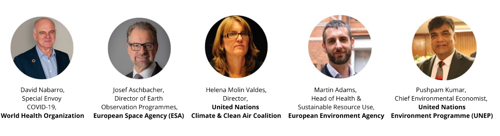

COVID-19 & Climate Change: What does this mean for the fight against the climate crisis?
About this webinar
Olive Network Editors note: Here we include 3 short excerpts from the webinar to focus on 'how can governments be persuaded?'. To see the original programme in its entirity please follow this link:
WATCH-ON DEMAND
Recorded on: Thursday, 30 April 2020
COVID-19 & Climate Change: The global health crisis has created grave uncertainties across the world. In response, governments have brought in unprecedented measures to curb the spread of the virus - the steps to restrict movement and mass gatherings, as well as the implementation of economic stimulus packages across the globe have not been seen during peacetimes. Whilst COVID-19 has seemingly put environmental diplomacy on hold with the postponement of COP26 and the 15th Biodiversity COP to 2021; what does the global health crisis mean for the ongoing climate crisis? In a year in which global political and business leaders are meant to put climate change first, what impact will this pandemic have on our collective ability to address the climate emergency?
Discussion points included:
- Direct impacts of COVID-19 on our climate
- Our ability to tackle climate change
- What can we learn from tackling COVID-19?
- How to rebuild green, clean and more resilient with COVID-19?
- How will governments act next?
Featured speakers:
Moderator:


EXCERPT 1
Question from William Young: How do we get governments to take the necessary action and integrate the policies required based on what they’ve learned from covid-19, for the climate emergency and for sustainability? (Nik Gowing)
Open on original site ↗EXCERPT 2
Question from Julia from Students for the Future in Germany
What would you say that we as civil society or activists can do now in order to build pressure at this time. What would be the best framing when speaking out for this kind of linkage? (Nik Gowing)
Open on original site ↗EXCERPT 3
The European Bank for Reconstruction: The need to tilt economic growth towards sustainability now in other words don’t invest unless it’s for green. Linking growth to a clean economy at the speed that’s necessary (Nik Gowing).
Open on original site ↗The European Space Agency (ESA) is Europe’s gateway to space. Its mission is to shape the development of Europe’s space capability and ensure that investment in space continues to deliver benefits to the citizens of Europe and the world.
Earth Observation is ESA’s largest programme. Measurements from its many missions provide a substantial contribution to climate monitoring. The scientific evidence on climate change is delivered through the ESA established Climate Change Initiative which generates long-term global data records for 21 key components of the climate system. Future missions will further expand capabilities and support Paris Agreement implementation.
For more information visit www.eas.int and follow @ESA_EO
SOURCE: CLIMATE ACTION
MODERATOR: NIK GOWING - THINKING THE UNTHINKABLE